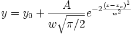
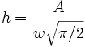
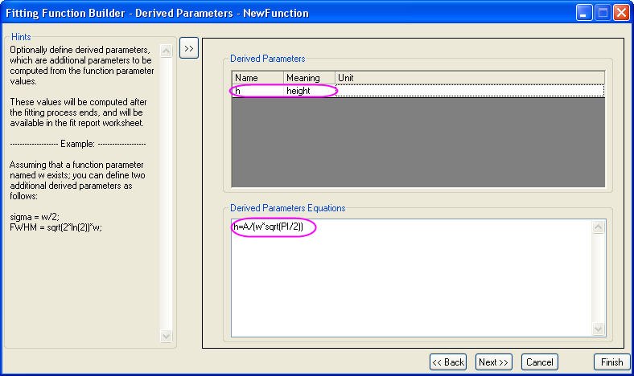

Abgeleitete Parameter sind zusätzliche Parameter, die mit den angepassten Parameterwerten berechnet werden. Sie können Ihre eigenen abgeleiteten Parameter für alle standardmäßigen oder anwenderdefinierten Anpassungsfunktionen definieren.
Zum Beispiel passt die standardmäßige Gauß-Funktion Impulsbereiche mit der folgenden Gleichung an:

Angenommen, Sie möchten auch die Impulshöhe wissen, können Sie diese folgendermaßen berechnen:

Zunächst müssen Sie zur Seite Variablen und Parameter des Anpassungsfunktionsbuilders gehen und den Namen der abgeleiteten Parameter im Bearbeitungsfeld Abgeleitete Parameter eingeben. Dann geben Sie die Ausdrücke der abgeleiteten Parameter auf der Seite Abgeleitete Parameter ein.

Nach der Anpassung berechnet Origin die Höhe und nimmt das Ergebnis in die Tabelle der Parameter im Worksheet der Anpassungsergebnisse auf.
Beachten Sie, dass Sie mehrere abgeleitete Parameter definieren müssen. Bitte trennen Sie sie jeweils mit einem Komma. Abgeleitete Parameter können auch nicht aus anderen abgeleiteten Parametern berechnet werden. Da diese Werte nach der Anpassung berechnet werden, kennt Origin die genaue Fehlerfortpflanzung nicht und gibt den Fehler für abgeleitete Parameter daher nicht aus.